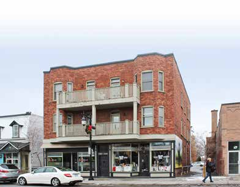

Multi-dwelling building of plex type L'immeuble à logements multiples de type plex

© Ville de Saint-Lambert / Patri-Arch (G. Mongrain, M. Dubois), Répertoire des courants architecturaux, fiche 9

© Ville de Saint-Lambert / Patri-Arch (G. Mongrain, M. Dubois), Répertoire des courants architecturaux, fiche 9
The Montréal plex on the South Shore: stacked flats behind stacked galleries, outside stairs, a brick crown of cornice or parapet. Saint-Lambert's version is the fiche's own summary of what the Plateau's typology splits into duplex, triplex and multiplex.
"La densification des villes, au début du 20e siècle, entraîne la prolifération d'immeubles à logements multiples … une forme d'habitation populaire se développe à grande échelle à Montréal : le plex", whose success in certain Montréal districts led promoters to build it in Saint-Lambert. For the type's genesis in the 1880s by-laws see the Plateau-Mont-Royal page.
| Tenure / plan | duplex |
|---|---|
| Storeys | 2–3 |
| Roof form | flat |
| Roof pitch | 0° |
| Window proportion | vertical |
| Principal cladding | clay-brick |
| Roofing | see materials |
| Garage | none |
| Lot width | – |
| Front setback | – |
| Side setback | – |
| Front yard green | – |
What Répertoire des courants architecturaux says about this type
- Early 20th-century densification model imported from Montréal by developers; usually party-wall, may be semi-detached (quadruplex, quintuplex) or repeated in rows.
- Rectangular body of two or three storeys, moderately raised, flat roof.
- Almost always superposed galleries and balconies on the main façade and, for plexes, exterior stairs; oriels or projecting bays may articulate the façade.
- Some multi-dwelling buildings have shared entrances or stairs serving several units; usually three storeys, with galleries and balconies so each family has private outdoor space.
- Corps de bâtiment rectangulaire de deux ou de trois étages, moyennement exhaussé du sol, à toit plat.
- L'immeuble à logements multiples possède presque toujours des galeries et des balcons superposés sur la façade principale ainsi que des escaliers extérieurs dans le cas de plex. … Des oriels ou des baies en saillie (bow-windows) peuvent articuler la façade.
- Ornament concentrated in the crown: cornices, parapets of various forms, brick patterns; woodwork (worked piers, railings, brackets) on galleries and balconies; ornament varies with the intended tenants.
- Les ornements sont surtout concentrés dans le couronnement de la façade. Corniches, parapets et jeux de briques …, tout comme les boiseries décoratives (piliers ouvragés, garde-corps et aisseliers) ornant les galeries et les balcons.
- Wood doors with glazing.
- Guillotine windows.
- Portes en bois avec vitrage.
- Fenêtres à guillotine.
- Brick (no imitation, unpainted).
- Pour les murs extérieurs en brique, aucun matériau d'imitation n'est acceptable et les matériaux industrialisés … sont à proscrire. Éviter de peindre la maçonnerie.
- No imitation brick; do not paint masonry; keep brick and mortar sound.
- Do not remove galleries, balconies or stairs or change their dimensions; railings in painted wood or wrought iron of traditional make, uniform on all projections.
- Steel/PVC doors unsuitable unless perfect imitations; avoid sliding and single-leaf crank windows and undivided windows.
- Do not raise foundations or add a pitched roof; side/rear reduced-volume additions only.
Same word elsewhere
- Apartment block with courtyard (Le Plateau-Mont-Royal (borough of Montréal))
- Small apartment building (Le Plateau-Mont-Royal (borough of Montréal))
Same form elsewhere
- Duplex without front setback (Le Plateau-Mont-Royal (borough of Montréal))
- Duplex with front setback (Le Plateau-Mont-Royal (borough of Montréal))
- Duplex with exterior stair (Le Plateau-Mont-Royal (borough of Montréal))
- Triplex with interior stair (Le Plateau-Mont-Royal (borough of Montréal))
- Triplex with exterior stair (Le Plateau-Mont-Royal (borough of Montréal))
Same period elsewhere
- Garden City House (Town of Mount Royal)
- Faubourg House (Town of Mount Royal)
- Faubourg Apartment Block (Town of Mount Royal)
- Canadian House (Town of Mount Royal)
- New England House (Town of Mount Royal)
- New England Apartment Block (Town of Mount Royal)
- Georgian House (Town of Mount Royal)
- English Manor House (Town of Mount Royal)
- Faubourg house (Le Plateau-Mont-Royal (borough of Montréal))
- Detached urban house (Le Plateau-Mont-Royal (borough of Montréal))
- Duplex without front setback (Le Plateau-Mont-Royal (borough of Montréal))
- Duplex with front setback (Le Plateau-Mont-Royal (borough of Montréal))
- Duplex with exterior stair (Le Plateau-Mont-Royal (borough of Montréal))
- Triplex with interior stair (Le Plateau-Mont-Royal (borough of Montréal))
- Triplex with exterior stair (Le Plateau-Mont-Royal (borough of Montréal))
- Multiplex (Le Plateau-Mont-Royal (borough of Montréal))
- Row urban house (Le Plateau-Mont-Royal (borough of Montréal))
- Apartment block without courtyard (Le Plateau-Mont-Royal (borough of Montréal))
- Apartment block with courtyard (Le Plateau-Mont-Royal (borough of Montréal))
- Small apartment building (Le Plateau-Mont-Royal (borough of Montréal))
Same style elsewhere
- Faubourg House (Town of Mount Royal)
- Faubourg house (Le Plateau-Mont-Royal (borough of Montréal))
- Duplex without front setback (Le Plateau-Mont-Royal (borough of Montréal))
- Duplex with front setback (Le Plateau-Mont-Royal (borough of Montréal))
- Duplex with exterior stair (Le Plateau-Mont-Royal (borough of Montréal))
- Triplex with interior stair (Le Plateau-Mont-Royal (borough of Montréal))
- Triplex with exterior stair (Le Plateau-Mont-Royal (borough of Montréal))
- Multiplex (Le Plateau-Mont-Royal (borough of Montréal))
- Boomtown house with false mansard (Saint-Lambert)
- Boomtown house with crown (parapet or cornice) (Saint-Lambert)